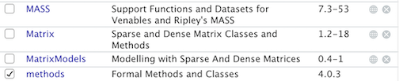
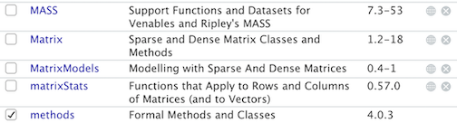
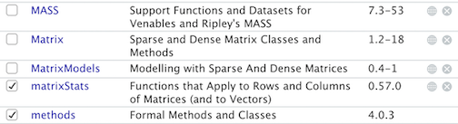
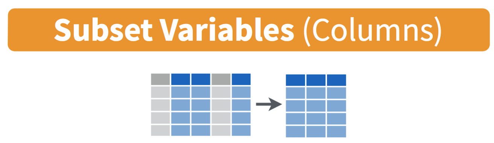
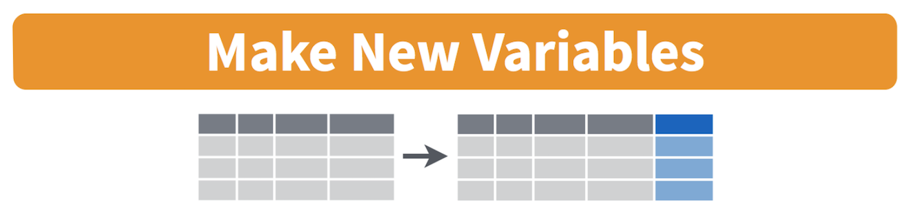
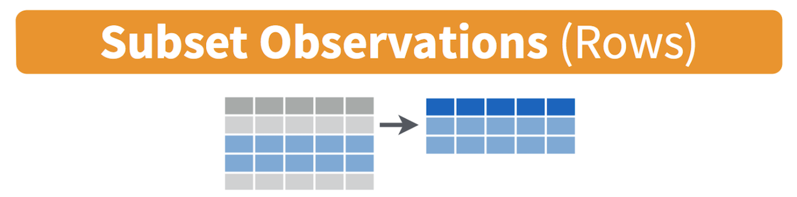

Lab 2: Data Wrangling
CRD 150 - Quantitative Methods in Community Research
Professor Noli Brazil
January 14, 2021
In this guide you will learn how to download, clean and manage data - a process known as Data Wrangling - in R. You will be working with data on California counties. The objectives of this guide are as follows
- Learn how to read data into R
- Learn about tidyverse
- Learn data wrangling functions
This lab guide follows closely and supplements the material presented in Chapters 3, 7-9, and 14 in the textbook R for Data Science (RDS) and the class Handout 2.
Assignment 2 is due by 12:00 pm, January 21st on Canvas. See here for assignment guidelines. You must submit an .Rmd file and its associated .html file. Name the files: yourLastName_firstInitial_asgn02. For example: brazil_n_asgn02.
Open up a R Markdown file
Rather than working directly from the R console, I recommended typing in lab code into an R Markdown and working from there. This will give you more practice and experience working in the R Markdown environment, which you will need to do for all of your assignments. Plus you can add your own comments to the code to ensure that you’re understanding what is being done. Download the lab template into an appropriate folder on your hard drive (preferably, a folder named ‘Lab 2’), open it in R Studio, and type and run your lab code there. The template is also located on Canvas under Files. Change the title (“Lab 2”) and insert your name and date. Don’t change anything else inside the YAML (the stuff at the top in between the ---). Also keep the grey chunk after the YAML. For a rundown on the use of R Markdown, see the assignment guidelines.
R Packages
At the end of Lab 1 we learned about R functions. Functions do not exist in a vacuum, but exist within R packages. Packages are the fundamental units of reproducible R code. They include R functions, the documentation that describes how to use them, and sample data. At the top left of a function’s help documentation, you’ll find in curly brackets the R package that the function is housed in. For example, type in your console ? seq. At the top left of the help documentation, you’ll find that seq() is in the package base. All the functions we have used so far are part of packages that have been pre-installed and pre-loaded into R. For all new packages, you need to install and load them.
In this lab and all labs from here on out, we will be using commands from the package tidyverse. Tidyverse is a collection of high-powered, consistent, and easy-to-use packages developed by a number of thoughtful and talented R developers. In order to use functions in a new package, you first need to install the package using the install.packages() command.
install.packages("tidyverse")You should see a bunch of gobbledygook roll through your console screen. Don’t worry, that’s just R downloading all of the other packages and applications that tidyverse relies on. These are known as dependencies. Unless you get a message in red that indicates there is an error (like we saw in Lab 1 when we typed in hello world without quotes), you should be fine.
Next, you will need to load the package into your working environment. You need to do this every time you start RStudio. We do this using the library() function. Notice there are no quotes around tidyverse this time.
library(tidyverse)The Packages window at the lower-right of your RStudio shows all the packages you currently have installed. If you don’t have a package listed in this window, you’ll need to use the install.packages() function to install it. If the package is checked, that means it is loaded into your current R session
For example, here is a section of my Packages window

The only packages loaded into my current session is methods, a package that is loaded every time you open an R session. Let’s say we use install.packages() to install the package matrixStats. The window now looks like

When you load it in using library(), a check mark appears next to matrixStats

Note that you only need to install packages once (install.pacakges()), but you need to load them each time you relaunch RStudio (library()). Repeat after me: Install once, library every time. This means your R Markdown should never have the function install.pacakges() but will likely always have the function library().
Are you ready to enter the tidyverse? Yes, of course, so here is a badge! Wear it proudly my young friends! And away we go!

Reading data
One of the first steps in the Data Wrangling process is to read in your dataset. Most of the data files you will encounter are comma-delimited (or comma-separated) files, which have .csv extensions. Comma-delimited means that columns are separated by commas. I uploaded a file on Canvas (Files - Week 2 - Lab) containing the number of Hispanic, white, Asian, and black residents in 2018 in California counties taken from the United States American Community Survey. Download the file week2data.csv and save it into the same folder where your Lab 2 R Markdown file resides. The record layout/codebook for the file can be found here.
To read in the csv file, first make sure that R is pointed to the folder you saved your data into. Type in getwd() to find out the current directory and setwd("directory name") to set the directory to the folder containing the data. In my Mac OS computer, the file is located in the folder shown in the figure below.
Directory path where your data reside
Using a Mac laptop, I type in the following command to set the directory to the folder containing my data.
setwd("~/Documents/UCD/CRD150/Labs/Lab 2")For a Windows system, you can find the pathway of a file by right clicking on it and selecting Properties. You will find that instead of a forward slash like in a Mac, a Windows path will be indicated by a single back slash \. R doesn’t like this because it thinks of a single back slash as an escape character. Use instead two back slashes \\
setwd("C:\\Users\\noli\\Desktop\\Classes\\CRD150\\Lab 2")or a forward slash /.
setwd("C:/Users/noli/Desktop/Classes/CRD150/Lab 2")You can also manually set the working directory by clicking on Session -> Set Working Directory -> Choose Directory.
Once you’ve set your directory, use the function read_csv() and plug in the name of the file in quotes inside the parentheses. Make sure you include the .csv extension.
counties <- read_csv("week2data.csv")You should see the object counties pop up in your Environment window (top right). First thing you should do when you bring in a data set is to look at it to make sure you know what you have and nothing went drastically wrong when reading in the data. One way to look at the data is to print it on your screen. Do this using the glimpse() command
glimpse(counties)## Rows: 58
## Columns: 8
## $ GEOID <chr> "06001", "06003", "06005", "06007", "06009", "06011", "06013"…
## $ name <chr> "Alameda County", "Alpine County", "Amador County", "Butte Co…
## $ state <chr> "California", "California", "California", "California", "Cali…
## $ hisp <dbl> 367041, 117, 4943, 35445, 5166, 12539, 284003, 5281, 23279, 5…
## $ nhasn <dbl> 468356, 8, 565, 9852, 527, 328, 177544, 741, 7805, 96128, 729…
## $ nhblk <dbl> 175063, 18, 764, 3282, 258, 186, 93140, 484, 1614, 45217, 212…
## $ nhwhite <dbl> 524881, 777, 29571, 164184, 36932, 7800, 504818, 17233, 14515…
## $ tpopr <dbl> 1629615, 1203, 37306, 225207, 45057, 21479, 1123678, 27442, 1…You get a quick, compact summary of your data The function takes one argument: the name of a data frame. It then tells us how many rows it has, how many variables there are, what these variables are called, and what kind of data are associated with each variable. This function is useful when we’re working with a data set containing many variables.
If you like viewing your data through an Excel style worksheet, type in View(counties), and counties should pop up in the top left window of your R Studio interface. Scroll up and down, left and right. Take some time to understand the format of the data set. What do the columns represent? Rows?
tidyverse can read in more than just .csv files. It has a suite of read_ functions that are a part of the subpackage readr. The goal of readr is to provide a fast and friendly way to read rectangular data (like csv, tsv, and fwf). It is designed to flexibly parse many types of data found in the wild, while still cleanly failing when data unexpectedly changes. To learn more about these functions, see readr’s dedicated site.
By learning how to read in data, you’ve earned another tidyverse badge! Hooray!

Tibbles
The data set that you brought in above using read_csv() saved the file in a special R object known as a tibble. Although the tidyverse works with all data objects, its fundamental object type is the tibble. Tibbles are essentially a special variant of data frames that have desirable properties for printing and joining. To illustrate comparisons between tibbles and regular data frames, let’s bring in the county data we downloaded above but using the function read.csv(), which will bring in files as regular data frames.
counties.df <- read.csv("week2data.csv")The first difference between regular data frames and tibbles is how the dataset “looks.” First, the tibble.
counties## # A tibble: 58 x 8
## GEOID name state hisp nhasn nhblk nhwhite tpopr
## <chr> <chr> <chr> <dbl> <dbl> <dbl> <dbl> <dbl>
## 1 06001 Alameda County California 367041 468356 175063 524881 1629615
## 2 06003 Alpine County California 117 8 18 777 1203
## 3 06005 Amador County California 4943 565 764 29571 37306
## 4 06007 Butte County California 35445 9852 3282 164184 225207
## 5 06009 Calaveras County California 5166 527 258 36932 45057
## 6 06011 Colusa County California 12539 328 186 7800 21479
## 7 06013 Contra Costa County California 284003 177544 93140 504818 1123678
## 8 06015 Del Norte County California 5281 741 484 17233 27442
## 9 06017 El Dorado County California 23279 7805 1614 145153 185015
## 10 06019 Fresno County California 509442 96128 45217 293677 971616
## # … with 48 more rowsTibbles have a refined print method that shows only the first 10 rows, and only the columns that fit on the screen. In addition, each column reports its name and type.
Tibbles are designed so that you don’t accidentally overwhelm your console when you print large data frames. Compare the print output above to what you get with a data frame
counties.dfUgly, right?
Not all functions work with tibbles, particularly those that are specific to spatial data. As such, we’ll be using a combination of tibbles and regular data frames throughout the class, with a preference towards tibbles where possible. Note that when you search on Google for how to do something in R, you will likely get non tidyverse ways of doing things. Most of these suggestions are fine, but some are not and may screw you up down the road. For example, always use read_csv() to read in data. Do not use read.csv(). My advice is to try to stick with tidyverse functions to do things in R. This is why our textbook RDS is a valuable resource.
Anyway, you earned another badge. Yes!

Data Wrangling
It is rare that the data you download are in exactly the right form for analysis. For example, rather than all counties in the tibble counties, you might want to analyze just Northern California counties. Or you might want to discard certain variables from the dataset to reduce clutter.
In this lab, we won’t have time to go through all of the methods and functions in R that are associated with the data wrangling process. We will cover more in Lab 3 and later labs. Many methods you will have to learn on your own given the specific tasks you will need to accomplish. In the rest of this guide, we’ll go through some of the basic data wrangling techniques using the functions found in the package dplyr, which was automatically installed and loaded when you brought in the tidyverse package.
Selecting variables
In practice, most of the data files you will download will contain variables you won’t need. It is easier to work with a smaller dataset as it reduces clutter and clears up memory space, which is important if you are executing complex tasks on a large number of observations. Use the command select() to keep variables by name. Visually, we are doing this (taken from the RStudio cheatsheet)

To see the names of variables in the dataset counties, use the names() command.
names(counties)## [1] "GEOID" "name" "state" "hisp" "nhasn" "nhblk" "nhwhite"
## [8] "tpopr"Let’s keep GEOID, name, hisp, nhasn, nhblk, nhwhite, and tpopr
select(counties, GEOID, name, hisp, nhasn, nhblk, nhwhite, tpopr)## # A tibble: 58 x 7
## GEOID name hisp nhasn nhblk nhwhite tpopr
## <chr> <chr> <dbl> <dbl> <dbl> <dbl> <dbl>
## 1 06001 Alameda County 367041 468356 175063 524881 1629615
## 2 06003 Alpine County 117 8 18 777 1203
## 3 06005 Amador County 4943 565 764 29571 37306
## 4 06007 Butte County 35445 9852 3282 164184 225207
## 5 06009 Calaveras County 5166 527 258 36932 45057
## 6 06011 Colusa County 12539 328 186 7800 21479
## 7 06013 Contra Costa County 284003 177544 93140 504818 1123678
## 8 06015 Del Norte County 5281 741 484 17233 27442
## 9 06017 El Dorado County 23279 7805 1614 145153 185015
## 10 06019 Fresno County 509442 96128 45217 293677 971616
## # … with 48 more rowsA shortcut way of doing this is to use the : operator.
select(counties, GEOID, name, hisp:tpopr)## # A tibble: 58 x 7
## GEOID name hisp nhasn nhblk nhwhite tpopr
## <chr> <chr> <dbl> <dbl> <dbl> <dbl> <dbl>
## 1 06001 Alameda County 367041 468356 175063 524881 1629615
## 2 06003 Alpine County 117 8 18 777 1203
## 3 06005 Amador County 4943 565 764 29571 37306
## 4 06007 Butte County 35445 9852 3282 164184 225207
## 5 06009 Calaveras County 5166 527 258 36932 45057
## 6 06011 Colusa County 12539 328 186 7800 21479
## 7 06013 Contra Costa County 284003 177544 93140 504818 1123678
## 8 06015 Del Norte County 5281 741 484 17233 27442
## 9 06017 El Dorado County 23279 7805 1614 145153 185015
## 10 06019 Fresno County 509442 96128 45217 293677 971616
## # … with 48 more rowsThe : operator tells R to select all the variables from hisp to tpopr. This operator is useful when you’ve got a lot of variables to keep and they all happen to be ordered sequentially.
You can use the select() command to keep variables except for the ones you designate. For example, to keep all variables in counties except state, and save this change back into a new tibble called counties1, type in
counties1 <- select(counties, -state)The negative sign tells R to exclude the variable named right after. You can delete multiple variables. For example, if you wanted to keep all variables except name and state, you would type in select(counties, -name, -state).
Creating new variables
The mutate() function allows you to create new variables within your dataset. This is important when you need to transform variables in some way - for example, calculating a ratio or adding two variables together. Visually, you are doing this

You can use the mutate() command to generate as many new variables as you would like. For example, let’s construct five new variables in counties1: the proportion of residents who are non-Hispanic white, non-Hispanic Asian, non-Hispanic black, and Hispanic. Name these variables pnhwhite, pnhasn, pnhblk, and phisp, respectively.
mutate(counties1, pnhwhite = nhwhite/tpopr, pnhasn = nhasn/tpopr,
pnhblk = nhblk/tpopr, phisp = hisp/tpopr)Note that you can create new variables based on the variables you just created in the same line of code (Wow!). For example, you can create a variable named diff that represents the difference between the percent non-Hispanic white and percent non-Hispanic black after creating both variables within the same mutate() command. Let’s save these changes back into counties1
counties1 <- mutate(counties1, pnhwhite = nhwhite/tpopr, pnhasn = nhasn/tpopr,
pnhblk = nhblk/tpopr, phisp = hisp/tpopr,
diff = pnhwhite-phisp)View counties1 to verify that you’ve successfully created these variables.
Filtering
Filtering means selecting rows/observations based on their values. To filter in R, use the command filter(). Visually, filtering rows looks like this.

The first argument in the parentheses of this command is the name of the data frame. The second and any subsequent arguments (separated by commas) are the expressions that filter the data frame. For example, we can keep just Sacramento county from counties1 using its FIPS code
filter(counties1, GEOID == "06067")The double equal operator == means equal to. The command is telling R to keep the rows in counties1 whose GEOID equals “06067”. There are quotes around 06067 because GEOID is a character variable.
We can also explicitly exclude cases and keep everything else by using the not equal operator !=. The following code excludes Sacramento county.
filter(counties1, GEOID != "06067")What about filtering if a county has a value greater than a specified value? For example, counties with a proportion Hispanic greater than 0.5 (50%).
filter(counties1, phisp > 0.50)What about less than 0.5 (50%)?
filter(counties1, phisp < 0.50)Both lines of code do not include counties that have a proportion Hispanic equal to 0.5. We include it by using the less than or equal operator <= or greater than or equal operator >=.
filter(counties1, phisp <= 0.5)In addition to comparison operators, filtering may also utilize logical operators that make multiple selections. There are three basic logical operators: & (and), | (or), and ! (not). We can keep counties with phisp greater than 0.5 and pnhasn greater than 0.05 by using &.
filter(counties1, phisp > 0.50 & pnhasn > 0.05)Use | to keep counties with a GEOID of “06067” (Sacramento) or “06113” (Yolo)
filter(counties1, GEOID == "06067" | GEOID == "06113")Arrange
We use the arrange() function to sort a data frame by one or more variables. You might want to do this to get a sense of which cases have the highest or lowest values in your data set or sort counties by their name. For example, let’s sort in ascending order counties by proportion Hispanic.
arrange(counties1, phisp)## # A tibble: 58 x 12
## GEOID name hisp nhasn nhblk nhwhite tpopr pnhwhite pnhasn pnhblk phisp
## <chr> <chr> <dbl> <dbl> <dbl> <dbl> <dbl> <dbl> <dbl> <dbl> <dbl>
## 1 06105 Trin… 937 141 104 10796 13037 0.828 0.0108 0.00798 0.0719
## 2 06063 Plum… 1599 148 160 15640 18724 0.835 0.00790 0.00855 0.0854
## 3 06057 Neva… 9109 1090 541 84389 98838 0.854 0.0110 0.00547 0.0922
## 4 06089 Shas… 17218 5195 1951 143919 178919 0.804 0.0290 0.0109 0.0962
## 5 06003 Alpi… 117 8 18 777 1203 0.646 0.00665 0.0150 0.0973
## 6 06091 Sier… 290 0 4 2509 2885 0.870 0 0.00139 0.101
## 7 06043 Mari… 1870 168 215 14309 17658 0.810 0.00951 0.0122 0.106
## 8 06023 Humb… 14986 3886 1389 101460 135490 0.749 0.0287 0.0103 0.111
## 9 06009 Cala… 5166 527 258 36932 45057 0.820 0.0117 0.00573 0.115
## 10 06109 Tuol… 6385 593 924 43565 53899 0.808 0.0110 0.0171 0.118
## # … with 48 more rows, and 1 more variable: diff <dbl>Trinity county has the lowest percent Hispanic with 7.19.
By default, arrange() sorts in ascending order. We can sort by a variable in descending order by using the desc() function on the variable we want to sort by. For example, to sort the dataframe by phisp in descending order we use
arrange(counties1, desc(phisp))## # A tibble: 58 x 12
## GEOID name hisp nhasn nhblk nhwhite tpopr pnhwhite pnhasn pnhblk phisp
## <chr> <chr> <dbl> <dbl> <dbl> <dbl> <dbl> <dbl> <dbl> <dbl> <dbl>
## 1 06025 Impe… 1.50e5 2263 4109 20372 1.80e5 0.113 0.0126 0.0228 0.834
## 2 06107 Tula… 2.92e5 14622 5973 135372 4.59e5 0.295 0.0319 0.0130 0.636
## 3 06069 San … 3.46e4 1564 437 20872 5.87e4 0.356 0.0267 0.00745 0.589
## 4 06011 Colu… 1.25e4 328 186 7800 2.15e4 0.363 0.0153 0.00866 0.584
## 5 06047 Merc… 1.56e5 19593 8007 77092 2.67e5 0.288 0.0733 0.0299 0.582
## 6 06053 Mont… 2.51e5 24213 10621 132600 4.33e5 0.306 0.0559 0.0245 0.579
## 7 06039 Made… 8.79e4 3035 4753 54145 1.54e5 0.351 0.0197 0.0308 0.569
## 8 06031 King… 8.07e4 5463 8916 49728 1.50e5 0.331 0.0364 0.0594 0.537
## 9 06019 Fres… 5.09e5 96128 45217 293677 9.72e5 0.302 0.0989 0.0465 0.524
## 10 06071 San … 1.11e6 142802 168985 632557 2.12e6 0.298 0.0673 0.0797 0.523
## # … with 48 more rows, and 1 more variable: diff <dbl>Imperial county has the largest percent Hispanic with 83.4.
Pipes
One of the important innovations from the tidyverse is the pipe operator %>%. You use the pipe operator when you want to combine multiple operations into one continuous line of code. For example, we can use a pipe to combine all the commands we executed on the object counties from the sections Selecting variables to Filtering in one continuous line of code.
counties2 <- counties %>%
select(-state) %>%
mutate(pnhwhite = nhwhite/tpopr, pnhasn = nhasn/tpopr,
pnhblk = nhblk/tpopr, phisp = hisp/tpopr,
diff = pnhwhite-phisp) %>%
filter(GEOID == "06067" | GEOID == "06113")Let’s break down what the pipe is doing here. First, you start out with your dataset counties. You “pipe” %>% that into the command select(). Notice that you didn’t have to type in counties inside the select() command - %>% pipes that in for you. select() deletes state and then pipes this result into the command mutate() to create new variables. This tibble gets piped to filter() to select just Davis and Yolo counties. Finally, the code saves the result into a new tibble counties2 which we designated at the beginning with the arrow operator.
Piping makes code clearer, and simultaneously gets rid of the need to define any intermediate objects that you would have needed to keep track of while reading the code. PIPE, Pipe, and pipe whenever you can. Badge it!

Saving Data
Let’s save a dataset containing race/ethnicity for Sacramento and Yolo counties. Use write_csv() to save the data frame or tibble as a csv file in the folder of your current working directory.
write_csv(counties2, "lab2_file.csv")The first argument is the name of the R object you want to save. The second argument is the name of the csv file in quotes. Make sure to add the .csv extension. The file is saved in the folder you set as the current working directory (remember, use getwd() to determine the current directory). You’re done! Time to celebrate.
Assignment 2
Download and open the Assignment 2 R Markdown Script. The script can also be found on Canvas (Files - Week 2 - Assignment). Any response requiring a data analysis task must be supported by code you generate to produce your result. Just examining your various objects in the “Environment” section of R Studio is insufficient—you must use scripted commands. Submit the Rmd and its knitted html files on Canvas. We’ve put together some additional R tips here in the likely case you get stuck.
- Download the file q2data.csv from Canvas (Files -> Week 2 -> Assignment). Make sure you download it into an appropriate folder on your hard drive. A codebook is also provided.
- Read the file into R. (1 point)
- How many rows are included in the file? What does each row represent? Remember that whenever you can, you need to use code to answer the questions. (2 points)
- How many columns are included in the file? What does each column represent? (2 points)
- Conduct the following data wrangling tasks. Use the pipe operator to do all of these tasks in one continuous line of code. Note that you have to decide the appropriate order of the tasks. (4 points)
- Keep the variables NAME, proportion White, Black and Hispanic, total population, and the difference between Hispanic and White income.
- Create variables containing the proportion White, Black and Hispanic.
- Create a variable subtracting White household income from Hispanic household income.
- Save the changes into a tibble named q2clean
- How many observations have a percent Hispanic greater than 50% and have Hispanic households earning more than white households? (2 points)
- The data set babynames contains the number of children of each sex given each name for each year from 1880 to 2017 as collected by the Social Security Administration. All names with more than 5 uses are given. Let’s strengthen your data wrangling skills by exploring this unique data set. Install the package babynames. Run the code
library(babynames),data(babynames)andhead(babynames). You should see the tibble babynames pop up in your global environment window. Type in? babynamesto get a description of this dataset.
- What was the most popular female baby name in 2017? What about male? (3 points)
- Does your name appear in the dataset? If yes, what year was it the most popular? (3 points)
- Is the name “Madison” a more popular Male or Female name in 2017? What about in 1984? (3 points)

This work is licensed under a Creative Commons Attribution-NonCommercial 4.0 International License.
Website created and maintained by Noli Brazil